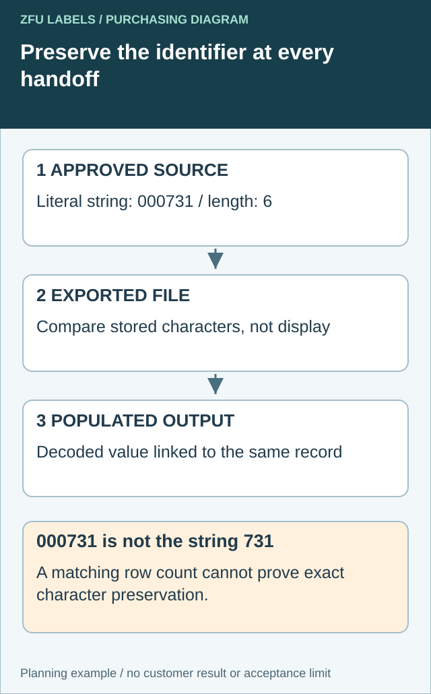

Before approving a variable-data run, establish that the file handed to the printer still contains the authorised character strings. A spreadsheet can display a plausible code after an import or formatting change. File integrity and control of rejected printed instances are separate parts of the same release.
Agree the replacement and reconciliation rules before production. A list of unique spreadsheet values is a starting point; it is not evidence that only one usable instance of each intended identifier was released. The example here is a planning method, not an authentication system or inspection service claim.

Check that the handoff preserves the identifier
The first reconciliation can fail before a label is printed. An identifier is a sequence of characters, even when every character is a digit. If software treats it as a number, its visible appearance may no longer reveal what will be exported. Keep an unchanged approved source and compare the actual exchange file with it.


Microsoft's Excel guidance explains that automatic numeric conversion can remove leading zeros and that numeric precision is limited to 15 significant digits. Import identifier columns as text using the applicable software controls. Formatting a value after characters were lost does not reconstruct the original. The software version and import route matter; confirm the receiving workflow rather than prescribing one screen sequence for every user.
Use a redacted integrity sheet before releasing the complete dataset:
| Checkpoint | Evidence to keep | Decision required |
|---|---|---|
| Approved source | Literal identifier, record key and expected character count | Data owner establishes the expected string independently |
| Imported working file | Column type, import route and actual stored characters | Resolve any conversion before editing or production |
| Final exchange file | Exact exported characters and file revision | Compare the file itself, not only the spreadsheet display |
| Populated proof | Decoded value and linked record key | Confirm the intended string reaches the output field |
For a clearly fictional test, 000731 contains six characters, while 731 contains three. A numeric display format may make a value appear padded without proving that the exported string has six characters. Another test may use the illustrative string 1234567890123456; it is not a real product identifier. Check its exact final characters rather than accepting a rounded number or scientific-notation display as equivalent.
The diagram follows these checkpoints. A matching row count cannot replace a string comparison: every row could remain present while a prefix disappears. Agree whether spaces, letter case or separators are meaningful; the printer must not silently normalise them. If a difference appears, preserve both files, identify the first changed checkpoint and ask the data owner for a controlled replacement. Guessing the lost characters is not recovery.
This check approves data preservation only. It does not prove uniqueness, printed symbol quality, correct application or controlled replacement of a damaged physical label. Keep those downstream records and their own release decisions, described below, after the file has passed the agreed handoff.
AI-generated packaging planning example. Alder Post is a fictional brand; the image is not a production result or usable code/label artwork.
Define record states before authorizing a reprint
Keep the data record separate from the physical printed instance. If the business permits the same identifier to be reprinted, the disposition of the earlier instance needs a controlled record. If the business instead issues a different identifier, preserve the link so reconciliation does not silently count both as the original requirement.
| Record entry | Question it must answer |
|---|---|
| Approved source | Which frozen dataset and record ID authorize this label? |
| Produced instance | Which production job or controlled instance reference represents it? |
| Hold or rejection | What was observed, and where is the affected physical label controlled? |
| Disposition | Who authorized destruction, permanent void, replacement or another agreed action? |
| Replacement link | Does the replacement use the same or a new encoded value under the agreed rule? |
| Shipment release | Which authorized instance is included, and which earlier instances are excluded? |
These are suggested business-control fields, not a prescribed database schema. Avoid collecting confidential campaign values through an initial inquiry; a redacted sample with column definitions is normally enough to discuss the requirement.
Reconcile sets, not only totals
Matching the requested and shipped counts cannot establish that the intended records are present. One missing record and one duplicate can leave the same total. Compare the authorized shipment set with the actual released set using the agreed identifiers and exception records. Investigate unexplained missing, extra or repeated entries before calling the reconciliation complete.
When a report uses a range such as first-to-last serial, ask how gaps and replacements are represented. A range alone can conceal exceptions. A general photo of a scanner also does not prove per-record capture, rejection control or any particular verification coverage; these need explicit deliverables and a confirmed production workflow.
If the supplier cannot provide the required per-record evidence, resolve the gap before ordering. Depending on the business consequence, a simpler static code, later controlled overprinting or a different verified workflow may be more appropriate. Do not buy a complex serialized design and discover afterward that nobody owns reconciliation.
The official GS1 Digital Link publication page separates URI syntax and resolver standards. Those standards do not by themselves establish a printer's rejected-label control or your campaign's uniqueness policy. Treat identifier syntax, printed-code quality and operational release as separate decisions.
Use barcode verification versus scanning for quality evidence, and preprinted labels with later overprinting when data is created at packing.
Short answer
Variable data label printing combines a fixed label design with changing fields such as QR codes, serial numbers, lots, dates or personalized graphics. The print technology matters, but the data file, validation rules and reconciliation process matter more.
Buyers sometimes send a spreadsheet and say, “put one code on every label.” That sounds complete until the parties ask which column is encoded, whether visible text must match it, what happens to duplicates and whether rejected labels may be reprinted. A variable-data brief needs to describe the system, not only the graphic.
Common variable-data jobs
| Use case | Variable element | Main control risk |
|---|---|---|
| Consumer campaign | Unique QR or alphanumeric code | Duplicates, dead links or early activation |
| Traceability | Lot, date, line or plant code | Mismatch with production records |
| Authentication | Unique serial and verification URL | Sequence leakage and database ownership |
| Regional content | Language, distributor or destination | Wrong version packed into a market |
| GS1 Digital Link | Standards-based web identifier | Incorrect syntax or unmanaged destination |
Build the data file before designing the code area
A clean variable-data file usually has one row per record and one purpose per column. Avoid merged cells, formulas that depend on another workbook and columns with mixed meanings. Freeze the final export and give it a version name that both buyer and printer can reference.
- record_id: a unique internal key for reconciliation.
- encoded_value: the exact text placed inside the QR or barcode.
- human_readable: the serial or lot printed for people.
- sku or artwork: the static design assigned to the record.
- status: optional control for active, void or replacement records.
For consumer-facing URLs, decide whether the printed code points directly to a page or to a controlled redirect. Direct links are simple but permanent. A managed redirect allows destination content to change, but it creates a service that must be maintained for the package's life.
QR code size is not the only scan variable
Quiet zone, contrast, module size, print gain, curve, glare and camera distance all affect scanning. A mathematically valid code can still fail on a glossy black bottle if the contrast and reflection are poor. Clear labels also need a controlled white area when the product or package cannot provide stable contrast.
| Check | Why it matters | How to test |
|---|---|---|
| Quiet zone | Separates the code from surrounding graphics | Measure against final printed modules |
| Contrast | Cameras need a stable light/dark difference | Test on the filled package, not white paper |
| Surface geometry | Tight curves distort the code | Scan from expected hand positions |
| Finish | Gloss and condensation create reflections | Test under retail and cold-storage conditions |
| Destination | A perfect scan can still reach a broken page | Validate redirects, HTTPS and mobile layout |
Sequence control after printing
Production can generate rejects during setup, inspection or finishing. Decide whether rejected numbers are permanently void, safely reprinted or simply absent from the shipped set. A sweepstakes code may tolerate a missing number but never a duplicate. A traceability program may require an exact connection between the applied label and the production lot.
For higher-risk programs, request a reconciliation report: source records received, labels produced, rejected records, replacements and final shipped range. The amount of control should match the consequence of an error. A seasonal recipe QR does not need the same chain of custody as a product-authentication code.
Where static printing is the better answer
Variable data adds file handling, proof logic and inspection. If every bottle only needs the same product page, one static QR code is simpler and easier to control. If lots and dates are created on the filling line, preprinting them may create inventory conflicts. One alternative is to leave a clear coding zone and using the co-packer's validated inkjet or thermal system instead.
Variable-data quote checklist
- State the number of unique records and quantity per artwork.
- Provide a final CSV sample with column definitions.
- Define uniqueness, sequence and duplicate rules.
- Specify visible text, code type, error correction and minimum scan size.
- Explain whether rejected records can be reprinted.
- Confirm the destination domain, redirect owner and activation date.
- Agree on scan sampling and any reconciliation report.
Read Barcode and QR Code Labels for static code placement and Date Code and Lot Number Labels for on-line coding zones. For standards-based web identifiers, review the official GS1 Digital Link standard.
Send the exception rules with the data specification
Resolve the specific label handoff
Include redacted column definitions, software/import route, literal example strings and the first checkpoint where they differ.
Prepare the label specification inquiry. The contact page opens an email draft for review; send files through the listed email or WhatsApp route. Actual supply scope, samples, pricing and timing require project confirmation.
Related decisions: Date Codes and Batch Numbers: Approve the Label Data Handoff; Variable-Weight Food Labels: Reconcile Price Data Across Scale and Checkout; Mixed-SKU Label Cartons: Recover an Orphan Roll Without Guessing Its Lot